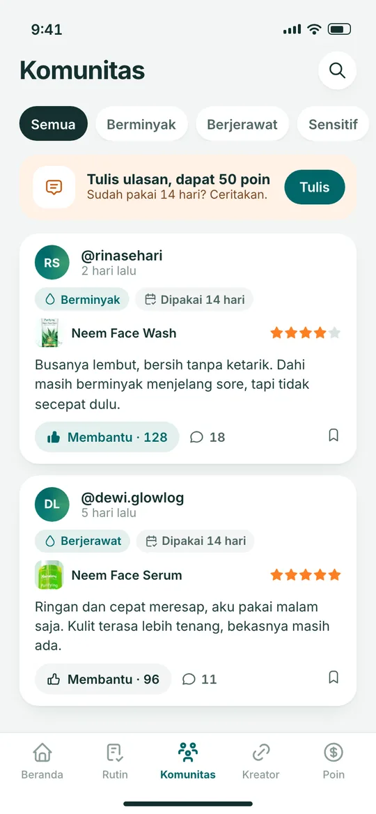

Bahan 01 · Azadirachta indica
Neem
Daun neem sudah lama dikenal dalam tradisi herbal India. Di formula ini, ekstrak daun neem membantu membersihkan kotoran dan minyak berlebih di permukaan kulit.
Sabun cuci muka gel berbahan herbal dengan neem dan kunyit. Membantu membersihkan kotoran dan minyak berlebih, sehingga wajah terasa bersih dan segar tanpa rasa licin.
Formula gel yang ringan untuk kulit yang cepat berminyak di cuaca panas. Dipakai pagi dan malam sebagai langkah pertama rutinitasmu.
Membersihkan minyak berlebih dan kotoran setelah beraktivitas.
Wajah terasa bersih dan segar setelah dibilas.
Mudah dibilas, tidak meninggalkan rasa licin.
Cocok dipakai dua kali sehari, pagi dan malam.
Daun neem sudah lama dikenal dalam tradisi herbal India. Di formula ini, ekstrak daun neem membantu membersihkan kotoran dan minyak berlebih di permukaan kulit.
Rempah yang akrab di dapur Indonesia. Bersama neem, kunyit membantu merawat kulit agar tampak lebih bersih dan segar.
Lakukan uji tempel di area kecil sebelum pemakaian pertama. Hentikan pemakaian jika timbul rasa tidak nyaman.
Produk dari rangkaian yang sama untuk langkah berikutnya: toner, serum, dan masker mingguan.
Di Komunitas Himalaya, pemakai menulis ulasan setelah dua minggu memakai produk. Setiap ulasan memberi poin yang bisa ditukar potongan harga produk Himalaya.
Gabung komunitas (konsep)

Pertanyaan yang sering muncul tentang Purifying Neem Face Wash.